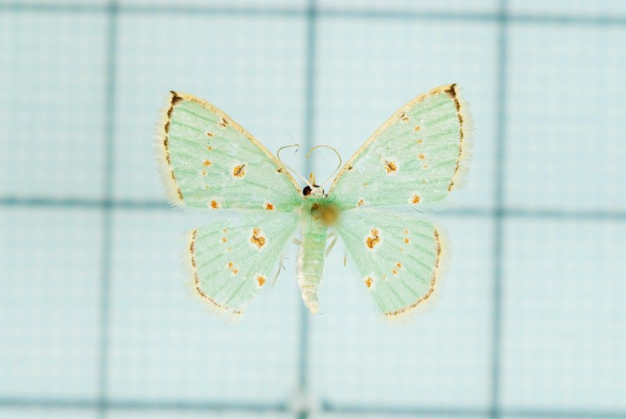

छोटा मरकत पतंगाSmall Emerald Moth
Comostola laesaria · Geometridae · INS-0230

- Scientific name वैज्ञानिक नाम
- Comostola laesaria (Walker, 1861)
- Family कुल
- Geometridae
- Hindi हिंदी
- छोटा मरकत पतंगा
- Local names स्थानीय नाम
- small emerald moth, comostola laesaria, chhota emerald patanga, small emerald geometer
- Status here यहाँ की स्थिति
- native
- Movement आवागमन
- Resident, here all year
- Known from कहाँ दर्ज
- Others have published records from the wider Awadh–Purvanchal plain, none yet from Basti–Ayodhya अवध–पूर्वांचल से दूसरों के प्रकाशित अभिलेख, बस्ती–अयोध्या से अभी नहीं
- IUCN IUCN
- not evaluated
- Review समीक्षा
- not yet reviewed
When to look कब देखें
Present all year. साल भर मौजूद।
Tell it apart from इनसे अलग पहचानें
छोटा मरकत पतंगा / Small Emerald Moth
Comostola laesaria (Walker, 1861) — Geometridae
छोटा मरकत पतंगा — बागों और हरियाली के बीच पाया जाने वाला एक बहुत छोटा और खूबसूरत हल्का हरा पतंगा। इसका रंग पन्ने (मरकत मणि) जैसा चमकीला हरा होता है और पंखों के किनारों पर लाल-कत्थई रंग की नन्ही बिंदियां सजी होती हैं। यह दिन में पत्तों के नीचे छिपकर रहता है और रात के समय रोशनी की ओर आकर्षित होता है।
Quick Identification त्वरित पहचान
| Feature | Description |
|---|---|
| Habit | Small delicate emerald-green geometer moth resting flat on foliage |
| Coloration | Pale bluish-green or apple-green with semitransparent wing texture |
| Wing margins | Marked with fine reddish-brown and pale ochreous chequered dots |
| Discal spots | Small distinct reddish-brown rings or specks on both fore- and hindwings |
| Antennae | Finely bipectinate in males, filiform in females |
Field tip: Gently shake low branches in mango or jamun orchards during humid monsoon days, or look on outdoor light screens near village orchards.
हिंदी — कैसे पहचानें: हल्का चमकीला हरा रंग, पंखों के किनारों पर लाल-भूरे छोटे बिंदु, और बैठने पर पत्तों से बिल्कुल घुल-मिल जाना।
Morphology आकारिकी
Adult description: A miniature emerald geometer. Vertex of head white; frons reddish-brown; thorax and abdomen delicate pale emerald-green. Wings semitransparent, pale glaucous-green. Forewing with costa narrowly edged with pale ochreous-yellow; discal spot small, reddish-brown surrounded by an ochreous ring; outer margin bordered by small reddish-brown marginal spots at the vein tips. Hindwing similar in colour and texture, with a matching central reddish discal spot and marginal specks.
Larval morphology: Slender, cryptically coloured looper caterpillar, often pale green with reddish dorsal markings matching flower buds, moving with characteristic looping locomotion.
हिंदी: पंख बहुत नाजुक और हल्के हरे होते हैं। किनारों पर कत्थई बिंदुओं की कतार होती है और बीच में छोटा लाल बिंदु होता है।
Behaviour & Ecology व्यवहार और पारिस्थितिकी
Comostola laesaria is nocturnal. During daylight hours, adults rest cryptically beneath green leaves, spreading their wings completely flat against the leaf surface to eliminate shadows.
Their green coloration provides superb camouflage against background foliage. Adults take flight after dark, flying with delicate, fluttery movements among canopy branches and flowering trees.
The caterpillars feed primarily on tender young leaves and flower buds of diverse woody plants. In many geometer loopers, the caterpillar attaches bits of dried floral petals or bracts to its dorsal setae, though Comostola relies chiefly on matching the green and reddish tints of host flower racemes.
हिंदी: यह पतंगा दिन के समय हरी पत्तियों के नीचे चिपककर बैठता है जिससे शिकारी इसे देख नहीं पाते। रात होते ही यह फूलों और डालियों के बीच उड़ता है।
Life Cycle / Phenology जीवन चक्र
| Season / Month | Stage & Activity |
|---|---|
| March–April (Spring) | Adults fly as mango and other orchard trees commence blossom flush |
| May–July (Pre-monsoon/Monsoon) | Multiple generations breed on developing fruits and summer shoots |
| August–October | Caterpillars feed on monsoon vegetative flushes across orchard groves |
| November–February (Winter) | Overwintering primarily as pupae sheltered in delicate cocoons on twigs |
Multivoltine in tropical and subtropical plains, producing several generations per year synchronized with tree vegetative and flowering cycles.
हिंदी: बसंत ऋतु में बागों में बौर आते ही पतंगे निकलते हैं। बरसात में कई पीढ़ियां पनपती हैं और जाड़ों में पतंगे प्यूपा के रूप में डालियों पर सुरक्षित रहते हैं।
Host Plants or Prey आहार
- Orchard and Forest Trees: Foliage and floral parts of Mango (Mangifera indica), Jamun (Syzygium cumini), and Buchanania cochinchinensis.
- Shrubs and Wild Flora: Feeds on Melastoma malabathricum, Cinnamomum, and related broadleaved species.
- Adult Diet: Nectar of small tree blossoms and honeydew secretions on foliage.
हिंदी: इसकी इल्ली आम, जामुन और चिरौंजी के बौर और नई पत्तियों को खाती है। वयस्क पतंगा फूलों का मीठा रस पीता है।
Predators / Natural Enemies शत्रु
- Arboreal Spiders: Lynx spiders (Oxyopes) and crab spiders capture adults resting on leaves.
- Predatory Insects: Mantids, assassin bugs, and lacewing larvae prey on looper caterpillars.
- Vertebrates: Small insectivorous tree frogs and garden warblers glean caterpillars from tree foliage.
हिंदी: पेड़ों पर रहने वाली मकड़ियां और गिरगिट वयस्क पतंगों को खाते हैं। छोटी चिड़ियां पत्तियों के बीच से हरी इल्लियों को ढूंढ लेती हैं।
Agricultural / Human Relevance कृषि प्रासंगिकता
- Minor orchard associate: Occasionally nibbles developing mango blossoms and tender flushes, but populations rarely attain pest status in commercial orchards.
- Horticultural indicator: Indicates diverse, semi-natural orchard habitats with minimal broad-spectrum chemical insecticide applications.
- Aesthetic value: Cherished by amateur macro-photographers for its delicate emerald coloration and intricate wing markings.
हिंदी: यह कभी-कभी आम के बौर पर देखा जाता है पर इससे कोई बड़ा नुकसान नहीं होता। इसका सुंदर हरा रंग कीटनाशक रहित प्राकृतिक बागों की पहचान है।
Expected Locally स्थानीय रूप से अपेक्षित
Not a field record. Written from published accounts for eastern Uttar Pradesh. No confirmed local sighting yet — if you have seen it, that is what the atlas needs.
अभी तक स्थानीय पुष्टि नहीं। यह विवरण प्रकाशित स्रोतों से है, किसी अवलोकन से नहीं।
Expected across the orchard tracts, riverine woodlands, and mature garden groves of Basti, Ayodhya, and Sant Kabir Nagar wherever mango and jamun trees flourish. GBIF holds published records from the wider Awadh–Purvanchal plain, none yet from Basti–Ayodhya. A first local record would be a photograph of an adult showing emerald wings and chequered margins, submitted with date and locality through the About page.
Distribution वितरण
Global range: Widespread across South and Southeast Asia, from India and Sri Lanka through Myanmar, Thailand, Malaysia, and Indonesia to Australia.
In India: Recorded throughout the Indo-Gangetic plain, peninsular India, the Western Ghats, and Assam (Hampson 1895).
In Uttar Pradesh: Distributed across the plains in orchard-rich and wooded districts.
In Basti district / eastern UP: Expected throughout rural mango groves and riverside woodlands.
हिंदी: यह पतंगा भारत, श्रीलंका, ऑस्ट्रेलिया और दक्षिण-पूर्व एशिया के वनों और बागों में पाया जाता है।
Research Questions शोध प्रश्न
- Does Comostola laesaria cause significant flower drop during the peak mango blossom period in Awadh? / अवध में आम के बौर के समय क्या यह पतंगा फूल गिरने का कारण बनता है?
- Which predatory spiders are most effective at catching emerald moths in local orchards? / स्थानीय बागों में कौन सी मकड़ियां इन हरे पतंगों का सबसे ज्यादा शिकार करती हैं?
- How does heavy synthetic pesticide spraying in commercial orchards impact Comostola abundance? / बागों में कीटनाशकों के छिड़काव से इस प्रजाति की संख्या पर क्या प्रभाव पड़ता है?
- What is the peak nocturnal flight window of this emerald moth during the monsoon? / बरसात में रात के किस पहर में यह हरा पतंगा सबसे अधिक सक्रिय होता है?
- Can school students spot this green moth resting under a mango leaf without disturbing it? / क्या स्कूली बच्चे बिना हिलाए आम के पत्ते के नीचे छिपे इस हरे पतंगे को ढूंढ सकते हैं?
Similar Species मिलती-जुलती प्रजातियाँ
| Species | How to tell apart | हिंदी |
|---|---|---|
| Comostola subtiliaria | Discal spots smaller and fainter; marginal dots less distinctly ringed | बीच का बिंदु बहुत हल्का, किनारों के धब्बे कम स्पष्ट |
| Cross-line Geometer Moth (Traminda mundissima) | Fawn or ochraceous-grey with a bold straight oblique cross-line | कत्थई-भूरा रंग, पंखों पर एक सीधी गहरी लकीर |
| Two-striped Pearl Moth (Glyphodes bivitralis) | Reddish-brown with large square clear transparent windows; snout moth | कत्थई-लाल रंग, पंखों पर दो बड़ी पारदर्शी खिड़कियां |
Field rule: A tiny pale emerald-green geometer moth with reddish-brown discal spots and chequered reddish dots along the outer wing margins identifies Comostola laesaria.
Taxonomy & Classification वर्गीकरण
Original description. Described by Francis Walker in 1861 as Geometra laesaria in List of the Specimens of Lepidopterous Insects in the Collection of the British Museum, part 22, pp. 499–755.
Subspecies. Monotypic across mainland South Asia; other geographic subspecies have been proposed in Australasia.
Family and order placement. Placed in the family Geometridae, subfamily Geometrinae (emerald moths), tribe Comostolini, in the order Lepidoptera.
IUCN status rationale. Not evaluated on the IUCN Red List; an adaptable and widespread moth across broad geographic zones in Asia and the Pacific.
हिंदी: फ्रांसिस वॉकर ने 1861 में इसका पहला वैज्ञानिक विवरण दिया था। यह जियोमेट्रिडी कुल और जियोमेट्रिनी उपकुल का सदस्य है।
Photo Gallery फोटो गैलरी
No photos yet — add field photos to media/species/small_emerald_moth/ and run node scripts/sync_photos.js.
Photos needed आवश्यक फोटो
- [ ] Adult resting flat beneath leaf showing green colour (पत्ते के नीचे बैठा हरा पतंगा)
- [ ] Close-up of wing margins showing chequered spots (पंखों के किनारों के लाल बिंदुओं का क्लोज-अप)
- [ ] Specimen attracted to outdoor lamp at night (रात में बत्ती पर बैठा पतंगा)
References संदर्भ
- Walker, F. (1861). List of the Specimens of Lepidopterous Insects in the Collection of the British Museum, part 22, pp. 499–755. British Museum, London.
- Hampson, G.F. (1895). The Fauna of British India, including Ceylon and Burma: Moths, vol. 3, p. 503. Taylor and Francis, London.
- Prout, L.B. (1912). Geometridae: Hemitheinae. In: Genera Insectorum, fasc. 129, pp. 1–274. V. Verteneuil & L. Desmet, Brussels.
- Holloway, J.D. (1996). The Moths of Borneo: part 9, Geometridae. Malayan Nature Society, Kuala Lumpur.
- Robinson, G.S., Ackery, P.R., Kitching, I.J., Beccaloni, G.W. & Hernández, L.M. (2001). Hostplants of the Moth and Butterfly Caterpillars of the Oriental Region. Natural History Museum, London.
- GBIF Occurrence Data — Comostola laesaria (Walker, 1861), India (2025).
Source file: species/fauna/insects/small_emerald_moth.md